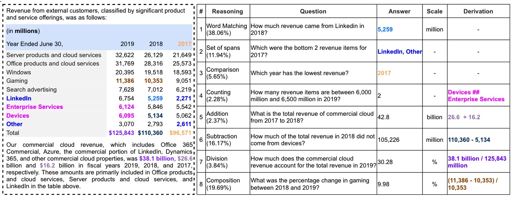

TAT-QA (Tabular And Textual dataset for Question Answering) is a large-scale QA dataset, aiming to stimulate progress of QA research over more complex and realistic tabular and textual data, especially those requiring numerical reasoning.
The unique features of TAT-QA include:
In total, TAT-QA contains 16,552 questions associated with 2,757 hybrid contexts from real-world financial reports.
The following is an example of TAT-QA. The left dashed line box shows a hybrid context. The rows with blue background are row header while the column with grey is column header. The right solid line box shows corresponding question, answer with its scale, and derivation to arrive at the answer.
TAT-DQA is a new large-scale Document Visual QA (VQA) dataset, which is constructed by extending the TAT-QA. Please check out it if you are interested in the new task.
{
"table": { # The tabular data in a hybrid context
"uid": "3ffd9053-a45d-491c-957a-1b2fa0af0570", # The unique id of a table
"table": [ # The table content which is 2d-array
[
"",
"2019",
"2018",
"2017"
],
[
"Fixed Price",
"$ 1,452.4",
"$ 1,146.2",
"$ 1,036.9"
],
...
]
},
"paragraphs": [ # The textual data in a hybrid context comprising at least two associated paragraphs to the table
{
"uid": "f4ac7069-10a2-47e9-995c-3903293b3d47", # The unique id of a paragraph
"order": 1, # The order of the paragraph in all associated paragraphs, starting from 1
"text": "Sales by Contract Type: Substantially all of # The content of the paragraph
our contracts are fixed-price type contracts.
Sales included in Other contract types represent cost
plus and time and material type contracts."
},
...
],
"questions": [ # The questions associated to the hybrid context
{
"uid": "eb787966-fa02-401f-bfaf-ccabf3828b23", # The unique id of a question
"order": 2, # The order of the question in all questions, starting from 1
"question": "What is the change in Other in 2019 from 2018?", # The question itself
"answer": -12.6, # The ground-truth answer
"derivation": "44.1 - 56.7", # The derivation that can be executed to arrive at the ground-truth answer
"answer_type": "arithmetic", # The answer type including `span`, `spans`, `arithmetic` and `counting`.
"answer_from": "table-text", # The source of the answer including `table`, `table` and `table-text`
"rel_paragraphs": [ # The orders of the paragraphs that are relied to infer the answer if any.
"2"
],
"req_comparison": false, # A flag indicating if `comparison/sorting` is needed to answer the question whose answer is a single span or multiple spans
"scale": "million" # The scale of the answer including `None`, `thousand`, `million`, `billion` and `percent`
}
]
}
| Rank | Model Name | Team Name | Exact Match | F1 | Created | Paper | Codes |
|---|---|---|---|---|---|---|---|
| - | Human Performance | - | 84.1 | 90.8 | - | - | - |
| 1 | TAT-LLM (70B) | NExT | 81.4 | 88.4 | 20 Jan 2024 | Paper | N.A. |
| 2 | MATATA-8B | Docugami | 77.6 | 84.9 | 9 Dec 2024 | Paper | N.A. |
| 3 | TAT-LLM (13B) | NExT | 77.5 | 85.9 | 20 Jan 2024 | Paper | N.A. |
| 4 | Code Generation for Table-Text Question using LLM (70B) | Anonymous | 76.8 | 84.7 | 21 Sep 2023 | N.A. | N.A. |
| 5 | TAT-LLM (7B) | NExT | 76.4 | 85.1 | 20 Jan 2024 | Paper | N.A. |
| 6 | AeNER: Attention-enhanced Numerical Embeddings for Reasoning | Gryffindor | 75.0 | 83.2 | 16 May 2022 | N.A. | N.A. |
| 7 | MATATA-3.8B | Docugami | 74.2 | 82.4 | 9 Dec 2024 | Paper | N.A. |
| 8 | Code Generation for Table-Text Question using LLM (13B) | Anonymous | 73.7 | 81.8 | 21 Sep 2023 | N.A. | N.A. |
| 9 | Encore | HIT-SCIR | 71.8 | 80.1 | 24 Oct 2022 | Paper | Code |
| 10 | KFEX-N: A Table-Text QA Model with Knowledge-Fused Encoder & EX-N Tree Decoder | CWQian China | 71.0 | 79.5 | 29 Oct 2023 | Paper | N.A. |
| 11 | MVGE: Multi-View Graph Encoder for Answering Hybrid Numerical Reasoning Question | Weiyifan@CASIA | 70.9 | 79.1 | 23 Dec 2022 | Paper | Code |
| 12 | RegHNT: Relational graph neural network with special multitask decoder | LFyimi@CASIA China | 70.3 | 77.9 | 5 May 2022 | Paper | Code |
| 13 | Code Generation for Table-Text Question using LLM (7B) | Anonymous | 68.4 | 77.3 | 21 Sep 2023 | N.A. | N.A. |
| 14 | UniRPG: Unified Discrete Reasoning over Table and Text as Program Generation | JD AI Research | 67.2 | 76.0 | 24 Feb 2022 | Paper | Code |
| 15 | RSTQA: Rounds Specified numerical reasoning for Table-Text QA | NLP2CT@UM Macau | 66.8 | 75.0 | 30 Oct 2023 | N.A. | N.A. |
| 16 | SoarGraph: Semantic-Oriented Hierarchical Graphs | NExT | 65.4 | 75.3 | 8 Sep 2022 | Paper | N.A. |
| 17 | UniPCQA | NExT / CUHK | 63.9 | 72.2 | 22 Oct 2022 | Paper | N.A. |
| 18 | MHST: Multi-Head with Sequence to Expression Tree | NExT | 63.6 | 72.7 | 24 May 2022 | Paper | N.A. |
| 19 | GANO: GNN for Tabular and Textual QA with Numerical Reasoning | iLab@AIST Japan | 61.9 | 72.1 | 15 Jul 2022 | Paper | N.A. |
| 20 | TBC | Anonymous | 60.8 | 68.7 | 22 Jun 2022 | N.A. | N.A. |
| 21 | FinMath: Injecting a Tree-structured Solver for Question Answering over Financial Reports | FinMath@NEU China | 58.3 | 68.2 | 6 Aug 2022 | Paper | N.A. |
| 22 | KIQA: Knowledge-infused QA Model for Table and Text | iLab@AIST Japan | 58.2 | 67.4 | 23 Feb 2022 | Paper | N.A. |
| 23 | LETTER: Logic Enhanced Table-Text Reasoning | OnceAgain | 56.1 | 64.3 | 17 Feb 2022 | N.A. | N.A. |
| 24 | TeaBReaC-pretrained T5-3B | SBU / Allen AI | 55.8 | 63.8 | 17 Jun 2022 | Paper | N.A. |
| 25 | OPERA-H | Hero_Dirk | 55.2 | 63.8 | 9 Oct 2022 | N.A. | N.A. |
| 26 | GenQA:Generative model for QA from table and text | IITJ@India | 55.1 | 65.6 | 7 Feb 2023 | N.A. | N.A. |
| 27 | Baseline - TagOp | NExT | 50.1 | 58.0 | 13 May 2021 | Paper | Code |
To evaluate your models, we have also made available the evaluation script we will use for official evaluation, To run the evaluation, use
python tatqa_eval.py --gold_path=:path_to_dev --pred_path=:path_to_predictions
The predictions file in JSON format contains a dictionary with question ids as keys and the predictions as values (each prediction shall include both `answer` and `scale` in an array). For example,
{
"9337c3e6-c53f-45a9-836a-02c474ceac16": [
"4.6",
"percent"
],
"c4170232-e89c-487a-97c5-afad45e9d702": [
"16",
"thousand"
],
"d81d1ae7-363c-4b47-8eea-1906fef33856": [
["2018", "2019"],
""
]
...
}
We also provide a sample prediction file (on Dev) for your reference.
python tatqa_eval.py --gold_path=dataset_raw/tatqa_dataset_dev.json --pred_path=sample_prediction.json
Please email the prediction file of the test set with the following information to us:
Please give us up to two weeks to evaluate your submission and we will add your model to the leaderboard.
The TAT-QA dataset is under the license of Creative Commons (CC BY) Attribution 4.0 International.
For more information, please contact the author: Fengbin ZHU fengbinzhu@u.nus.edu
Please kindly cite our work if you use our dataset or codes, thank you.
@inproceedings{zhu2021tat,
title = "{TAT}-{QA}: A Question Answering Benchmark on a Hybrid of Tabular and Textual Content in Finance",
author = "Zhu, Fengbin and
Lei, Wenqiang and
Huang, Youcheng and
Wang, Chao and
Zhang, Shuo and
Lv, Jiancheng and
Feng, Fuli and
Chua, Tat-Seng",
booktitle = "Proceedings of the 59th Annual Meeting of the Association for Computational Linguistics and the 11th International Joint Conference on Natural Language Processing (Volume 1: Long Papers)",
month = aug,
year = "2021",
address = "Online",
publisher = "Association for Computational Linguistics",
url = "https://aclanthology.org/2021.acl-long.254",
doi = "10.18653/v1/2021.acl-long.254",
pages = "3277--3287"
}